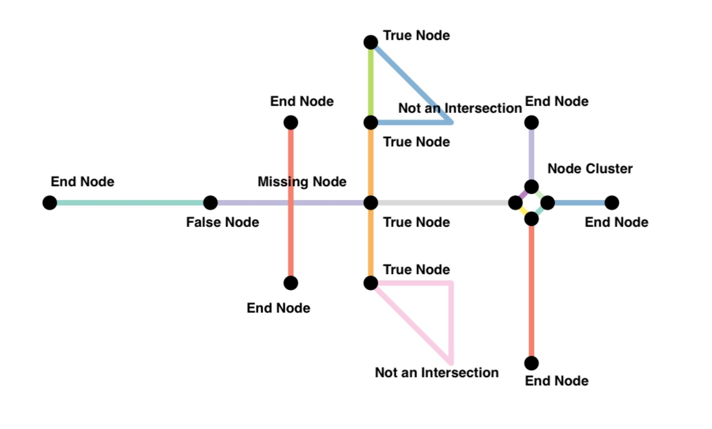

Cleaning Spatial Networks

Introduction
Some transportation networks are intuitive to understand as networks. We can easily visualize intersections as nodes and roadways as edges in a road network. A network analysis approach helps in understanding complex behaviour of systems such as transportation networks that would not be possible with other types of analyses that look at individual components as separate entities. Understanding the relationships between various components such as different types of roadways (highways, side walks, residential roads) and how they induce events likes traffic jams requires a relational systemic perspective that is not fully provided with statistical or spatial analysis on their own. Spatial networks preserves the spatial properties while allowing exploration of relations between entities represented as points, lines and polygons.
While it is fairly easy to extract road networks from geospatial databases such as OpenStreetMap, using such data for network analysis isn’t so straightforward. Road network information are inherently messy because of complexities in roads and information associated with roads and transportation. In this tutorial, we will learn how to clean spatial networks in R. We take an example of a network of walkable streets in Downtown Carrboro in North Carolina.
We will use sfnetworks package. The package bridges network analysis functionalities of the tidygraph package with the spatial analysis functionalities of the sf package.
As of writing this tutorial, sfnetworks has recently been removed from CRAN, the peer-reviewed repository for R packages. We can use remotes packages to install the package from Github.
install.packages("remotes")
remotes::install_github("luukvdmeer/sfnetworks")
library(osmdata)
library(tidyverse)
library(sf)
library(igraph)
library(tidygraph)
library(sfnetworks)
library(tmap)
library(dbscan)
library(widgetframe)
Downloading Data & Sanity Checks
Previously we have used “osmdata” package to download restaurants from OpenStreetMap using Overpass Query. Let’s use the same package to download all walkable ways in Downtown Carrboro. The key-value pairs used are not exhaustive. There maybe others that are relevant.
we_foot <- opq("Downtown Carrboro, North Carolina") %>%
add_osm_feature(key = "highway", value = c("bridleway","corridor", "elevator", "footway", "living_street", "path", "pedestrian", "primary", "primary_link", "residential", "secondary", "secondary_link", "service", "steps", "tertiary", "tertiary_link", "track", "unclassified"))%>%
osmdata_sf() #convert to sf
We will look at the columns, and a summary of the components of the spatial object
names(we_foot)
## [1] "bbox" "overpass_call" "meta"
## [4] "osm_points" "osm_lines" "osm_polygons"
## [7] "osm_multilines" "osm_multipolygons"
we_foot
## Object of class 'osmdata' with:
## $bbox : 35.8899859,-79.0952611,35.9299859,-79.0552611
## $overpass_call : The call submitted to the overpass API
## $meta : metadata including timestamp and version numbers
## $osm_points : 'sf' Simple Features Collection with 17707 points
## $osm_lines : 'sf' Simple Features Collection with 2793 linestrings
## $osm_polygons : 'sf' Simple Features Collection with 44 polygons
## $osm_multilines : NULL
## $osm_multipolygons : NULL
We can see that there are points, lines and polygons but no multi-lines and multipolygons. First we need to change polygons to lines. We do not need to worry about the points. The points are the points that make up the lines and polygons.
We can look at the location of those polygons.
we_foot$osm_polygons %>%
st_geometry() %>%
plot()

We are only considering points and lines for this spatial network analysis. We can cast the polygons to lines.
# cast polygons to lines
poly_to_lines <- st_cast(we_foot$osm_polygons, "LINESTRING")
## Warning in st_cast.sf(we_foot$osm_polygons, "LINESTRING"): repeating attributes
## for all sub-geometries for which they may not be constant
# bind all lines together
we_foot_lines <- bind_rows(we_foot$osm_lines, poly_to_lines)
# plot it
we_foot_lines %>%
st_geometry() %>%
plot()

Cleaning the Network
Mathematically a network/graph is a collection of links and nodes. For many applications, what really matters is the connections and relationships among these links and nodes, but not the spatial attributes these links and nodes. In other words, topological relationships are more important than spatial relationships. See for example, the Input Output matrix of various industries, or social network of different individuals or networks of neurons in brain.
However, in spatial networks, the location of the roads and street intersection matter. Furthermore, the representation of streets as lines (straight, or multilines, curved roads), their directionality (one-way, two-way), the precision (e.g. dangling, snaps), crossings (at grade, overpass etc.), road type (limited access, pedestrian etc.) all matter for how we construct what are links and which nodes (intersections) are relevant.
Much of the analysis is trying to figure out appropriate ways to clean the street network data so that only relevant nodes and links are kept in the graph. Because the road networks are different in different parts of the world, it is hard to come up with a consistent set of rules that will work everywhere.
Some of the key cleaning steps are demonstrated in the sfnetwork vigenttes.
Here are some common issues and rules we often use with street/road networks. As with everything, these are not exhaustive.
-
Curved Roads or road with multiple segments (e.g. change in directions) that have the same ID are not considered intersecting.
-
End nodes (e.g. cul-de-sacs) do not contribute to walkability and should be ignored in street intersection density calculations. Because these nodes have degree 1 (only one edge is incident on them), we can filter them relatively easily after the fact.
-
When a network is constructed, nodes are constructed from shared endpoints. However, sometimes, road may overlap and share some interior points resulting in a missing node. Often this is because they are overpasses or underpasses, but sometimes they are mapping errors. To rectify these mapping errors we can use to_spatial_subdivision().
-
Roads that continue in the same direction but have different IDs (or names) will often be coded as different roads. However, the intersection of these two roads should be considered a false node. We can eliminate them in two different ways.
-
They have degree 2. So we can try and filter them out after the fact. However, there might be instances where degree 2 nodes might be true intersections, such as the intersection at te lower triangle in the example (why?). Exercise caution.
-
We can apply to_spatial_smooth to remove these pseudonodes. This function iteratively smooths pseudo nodes, and after each removal concatenates the linestring geometries of the two affected edges together into a new, single linestring geometry.
-
Often we want to simplify the topology of the network, by reducing the complex intersection structures into a single node you might want to reduce such complex intersection structures into a single node, but still maintaining the connectivity of the network.
Some of the key cleaning steps in networks are demonstrated in the sfnetwork vigenttes. The following figure illustrates some common issues encountered in the spatial datasets that need to be accounted for.
Conversion of spatial data to spatial network
We can convert the spatial object to spatial network using as_sfnetwork function
foot_net <- as_sfnetwork(we_foot_lines, directed = FALSE)
plot(foot_net)

We can make the nodes less prominent from default settings while visualizing.
plot(st_geometry(foot_net, "edges"), lwd = 1)
plot(st_geometry(foot_net, "nodes"), pch = 5, cex = .2, add = TRUE)
 Often it is useful to have an interactive map to zoom and pan into the data to understand the different cleaning operations that may be required.
Often it is useful to have an interactive map to zoom and pan into the data to understand the different cleaning operations that may be required.
tmap_mode("view") # set to interactive mode
## tmap mode set to interactive viewing
m1 <-
tm_tiles("CartoDB.Positron") +
tm_shape(st_as_sf(foot_net, "edges")) +
tm_lines(col = "highway", palette = "Accent", colorNA = "red") +
tm_shape(st_as_sf(foot_net, "nodes")) +
tm_dots() +
tm_view(set.zoom.limits = c(15,18))
frameWidget(tmap_leaflet(m1))
Removing multiple edges and loops
Multiple edges are more than one edges that connect the same two nodes. Loops are edges that connect a point to itself. We can filter them out using off-the-shelf functions. Use caution, this may or may not be desirable.
foot_simple = foot_net %>%
activate("edges") %>%
arrange(edge_length()) %>%
filter(!edge_is_multiple()) %>%
filter(!edge_is_loop())
removed_edges <-st_as_sf(foot_net, "edges") %>% st_geometry() %>%
setdiff(st_as_sf(foot_simple, "edges")%>%st_geometry()) %>%
st_as_sf()
plot(st_geometry(foot_simple, "edges"), lwd = 1)
plot(st_geometry(foot_simple, "nodes"), pch = 5, cex = .2, add = TRUE)
plot(st_geometry(removed_edges), lwd = 1, col ='red', add =T)

Subdivision & Smoothing
Some edges have interior nodes that are connected to other edges. We need to divide such edges. “to_spatial_subdivision” is the function we use.
On the other hand, there will be nodes that only connect two edges. Those nodes are not critical and can be removed. For that we use, “to_spatial smooth.”
vcount(foot_simple) # Vertex/Node Count
## [1] 4092
ecount(foot_simple) # Edge Count
## [1] 2778
foot_simple_subdivision <- convert(foot_simple, to_spatial_subdivision)
## Warning: to_spatial_subdivision assumes attributes are constant over geometries
vcount(foot_simple_subdivision)
## [1] 4808
ecount(foot_simple_subdivision)
## [1] 6175
foot_simple_smooth <- convert(foot_simple_subdivision, to_spatial_smooth)
vcount(foot_simple_smooth)
## [1] 4171
ecount(foot_simple_smooth)
## [1] 5538
We can see the changes in the number of nodes and edges each cleaning (spatial morphing) operation did. Visualise the removed nodes in the following way.
# We only care about the geometry so we ignore other attributes.
removed_nodes <-
st_as_sf(foot_simple, "nodes") %>% st_geometry() %>%
setdiff(st_as_sf(foot_simple_smooth, "nodes")%>%st_geometry()) %>%
st_as_sf()
added_nodes <- st_as_sf(foot_simple_subdivision, "nodes") %>% st_geometry() %>%
setdiff(st_as_sf(foot_simple, "nodes")%>%st_geometry()) %>%
st_as_sf()
m1 <-
tm_tiles("CartoDB.Positron") +
tm_shape(st_as_sf(foot_simple_smooth, "nodes")) +
tm_dots(size = .01)+
tm_shape(st_as_sf(foot_simple_smooth, "edges")) +
tm_lines()+
tm_shape(removed_nodes)+
tm_dots(col = 'red', size = .03, legend.show = T) +
tm_shape(added_nodes) +
tm_dots(col = 'green', size = .03, legend.show = T) +
tm_view(set.zoom.limits = c(15,18))
frameWidget(tmap_leaflet(m1))
The examples above present only simple cleaning operations. There will undoubtedly be others. We should look closely for what cleaning operations are required.
Disconnected components
One of the problem we can see are isolated sets of nodes and edges that are disconnected from the main network. These are largely because of
- mapping errors,
- issues around precision of the coordinates
- Nodes belonging to roads/links that are not selected in the query (motorways e.g.)
- other anomalies
components(foot_simple_smooth)$no
## [1] 50
components(foot_simple_smooth)$csize
## [1] 4035 4 2 5 2 8 2 2 4 4 2 2 2 2 2
## [16] 2 2 2 2 2 2 2 2 6 2 2 2 2 2 2
## [31] 2 4 2 2 11 2 2 2 2 2 2 2 2 10 2
## [46] 2 2 2 2 2
In this network, there are 50 components and first component has most of the nodes (4035). Let’s visualise these disconnected components.
disconnected_components <- foot_simple_smooth %>%
activate('nodes')%>%
filter(components(foot_simple_smooth)$membership > 1)
m1 <-
tm_tiles("CartoDB.Positron") +
tm_shape(st_as_sf(foot_simple_smooth, 'edges')) +
tm_lines()+
tm_shape(st_as_sf(disconnected_components, "nodes")) +
tm_dots(col = 'red')+
tm_shape(st_as_sf(disconnected_components, "edges")) +
tm_lines(col = 'red') +
tm_view(set.zoom.limits = c(15,18))
frameWidget(tmap_leaflet(m1))
In this particular instance, they are mostly minor and often can be ignored. In other instances, ignoring them would cause analytical difficulties.
foot_smooth_connected <- foot_simple_smooth %>%
activate('nodes')%>%
filter(components(foot_simple_smooth)$membership == 1)
Exercise
- Instead of ignoring the disconnected components, you can try and snap some of the nodes of the disconnected components to the main network. This might involve finding the closest node/s of the disconnected component to an edge in the main network. You might have to give explicit instructions about which of the nodes are candidates for snapping. (Hint: This post may be useful.
Simplifying intersections by contracting nodes
Intersections in OpenStreetMap are often represented by a collection of several nodes. For the purposes of a network analysis, treating an intersection as one node is usually sufficient. We do that by contracting nearby nodes that are connected into one node.
First, we cluster nearby nodes using the DBSCAN algorithm. We have to choose the right epsilon value that represents the nearness required for nodes to belong to a single cluster. We contracted the nodes that belong to a single cluster using “to_spatial_contracted” function. It is important the the nodes are not only sufficiently near but also connected, checked using tidygraph’s “group_components” function by creating an additional variable.
node_coords = foot_smooth_connected %>%
activate("nodes") %>%
st_coordinates()
#0.004
clusters = dbscan(node_coords, eps = 0.0001, minPts = 1)$cluster
unique(clusters) %>%
head()
## [1] 1 2 3 4 5 6
clustered = foot_smooth_connected %>%
activate("nodes") %>%
mutate(cls = clusters)
clustered = clustered %>%
mutate(cmp = group_components())
foot_connected_contracted = convert(
clustered,
to_spatial_contracted,
cls, cmp,
simplify = TRUE
)
The number of edges and nodes provides a simple sanity check. We do not want the number of nodes to have reduced by a lot unless we have a large number of intersections with redundant nodes.
ecount(foot_connected_contracted)
## [1] 3809
vcount(foot_connected_contracted)
## [1] 2949
removed_nodes <-
st_as_sf(foot_smooth_connected, "nodes") %>% st_geometry() %>%
setdiff(st_as_sf(foot_connected_contracted, "nodes")%>%st_geometry()) %>%
st_as_sf()
added_nodes <- st_as_sf(foot_connected_contracted, "nodes") %>% st_geometry() %>%
setdiff(st_as_sf(foot_smooth_connected, "nodes")%>%st_geometry()) %>%
st_as_sf()
m1 <-
tm_tiles("CartoDB.Positron") +
tm_shape(st_as_sf(foot_connected_contracted, "nodes")) +
tm_dots()+
tm_shape(st_as_sf(foot_connected_contracted, "edges")) +
tm_lines()+
tm_shape(removed_nodes)+
tm_dots(col = 'red', size = .01) +
tm_shape(added_nodes)+
tm_dots(col='green', size = .02) +
tm_view(set.zoom.limits = c(15,18))
frameWidget(tmap_leaflet(m1))
Exercise
Explore the following:
- What does the epsilon value mean? How is it used in the DBSCAN algorithm?
- Try different epsilon values and see the impact of changes on the network.
- Identify other potential issues related to cleaning the network by looking closer at different areas in the map and explore how you can address them.
Conclusion
As you may surmised much of this cleaning is an art rather than a precise steps you can follow. As with anything, the analytical choices dictate the final network you will end up with. These choices matter for the analysis of the network, sometimes in small ways and some other times in large ways.
Other Resources
This tutorial borrows heavily from the following resources. You can refer them for more detailed coverage in specific issues discussed here.
Nikhil Kaza
Professor
My research interests include urbanization patterns, local energy policy and equity